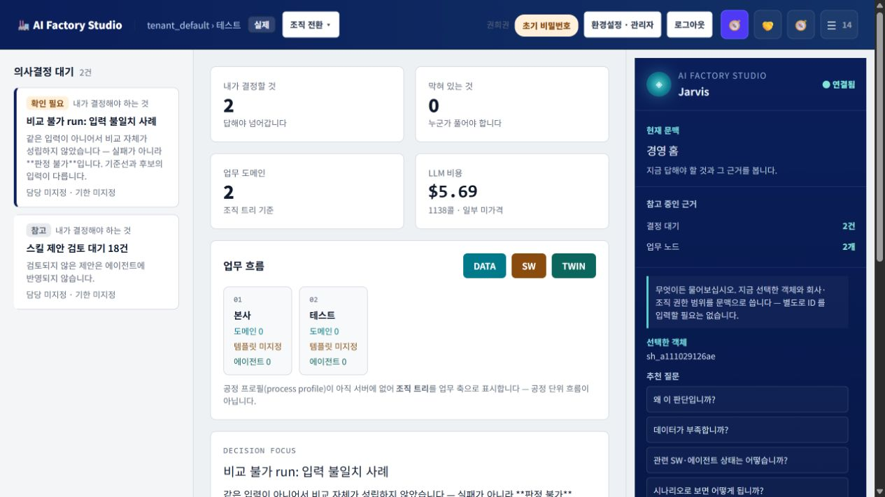

회사를 이해하고,
현업이 만들고,
경영이 결정합니다.
기업의 실제 데이터와 업무 지식을 바탕으로 현업 앱을 만들고, 그 운영 결과를 경영 시뮬레이션·의사결정·실행·효과 측정까지 연결하는 제조 경영 디지털트윈 플랫폼입니다.
발주량과 안전재고를 함께 조정하세요.
원료 가격·재고·생산계획·현금흐름을 같은 기준시점으로 비교한 결과입니다.
- 예상 손익
- -0.7%p
- 현금 위험
- -8.3억
시스템은 많지만,
경영의 질문은 여전히 연결되지 않습니다.
기업은 ERP·MES·QMS·엑셀·BI를 이미 보유하고 있습니다. 문제는 시스템의 부재가 아니라 업무의 의미, 데이터의 기준, 판단의 근거와 실행 결과가 분리되어 있다는 점입니다.
작은 개선도 IT 과제와 장기 개발로 전환
같은 매출·재고·제품이 시스템마다 다른 뜻
보고서는 만들어지지만 승인·조치로 이어지지 않음
계획은 엑셀, 실적은 ERP, 전망은 개인 경험에 의존
거대한 시스템을 다시 만드는 대신,
현업의 작은 가치가 전사 경영 자산으로 자라게 합니다.
아이디어에서 효과 측정까지,
하나의 추적 가능한 경영 순환
생성 기능 하나가 아니라, 회사의 실제 데이터가 의사결정과 실행을 거쳐 다시 기업 지식으로 돌아오는 폐루프가 제품의 본질입니다.
제조 경영 의미MDM · Catalog · Ontology · Knowledge
무엇을 만들고 어떤 데이터가 필요한지 먼저 제안
기획·설계·구현·검토·릴리스를 AI 에이전트가 협업
앱은 상위 권한과 데이터 계약을 상속
승인된 입력·산식·버전으로 대안을 계산
근거·영향·대안을 갖춘 패키지로 승인
실적과 피드백을 다음 앱·규칙·시나리오에 환류
현업의 속도와
경영의 신뢰를 함께 설계합니다.
현업 앱 공장, 기업 경영 의미지도, 경영 디지털트윈은 별도 기능이 아니라 같은 데이터와 권한을 공유하는 세 개의 제품 표면입니다.
현업이 직접 만드는
업무 앱
업무 언어로 요구를 설명하면 AI 에이전트 팀이 질문·기획·설계·구현·검토를 수행합니다.
- 선택형 요구사항 구체화
- 투명한 WBS와 진행 상태
- 상위 인증·권한·감사 상속
- 사용자 전달·수락·앱 주머니
기업이 축적하는
공통 의미
품목·공정·조직·KPI·정책·업무 사건과 데이터 근거를 승인된 관계로 연결합니다.
- MDM·데이터 카탈로그
- 용어사전·Crosswalk
- 제조 경영 온톨로지
- 근거 경로·버전·유효기간
경영진이 조정하는
미래 시나리오
환율·원료·전력·수요·고용 가정을 조정하고 생산·매출·손익·현금 영향을 계산합니다.
- Actual·Plan·Forecast·Scenario 분리
- 결정론적 계산과 Backtest
- 대안 비교와 영향 부서 확인
- 결정 패키지·실행·효과 측정
경영 홈에서
지금 답해야 할 일을 봅니다.
현재 구현 화면입니다. 조직·실행 문맥을 고정하고, 의사결정 대기·업무 흐름·비용·근거를 한 화면에서 확인합니다. 우측 AI 비서는 선택한 객체와 사용자 권한을 문맥으로 사용합니다.

현업의 언어를
실행 가능한 업무 앱으로.
현재 구현 화면입니다. 새 업무를 만들 때부터 앱 유형, 에이전트 워크플로우, 지식팩, 기준정보와 외부 실측값 사용 여부를 명시해 생성 품질과 통제 범위를 함께 결정합니다.

독립 앱과 Mega 프로젝트를 구분하고 업무 목표를 고정합니다.
역할·순서·사용자 확인 지점이 정의된 워크플로우를 선택합니다.
지식팩과 MDM 도메인을 연결해 모델이 바뀌어도 같은 기준을 사용합니다.
실제·가상·검증 문맥과 조직 권한을 상위 플랫폼에서 상속합니다.
회사의 자료를
재사용 가능한 판단 근거로.
현재 구현 화면입니다. 문서를 단순 업로드하는 데 그치지 않고 지식팩·원본 등록부·검색 품질·프로젝트 연결 상태로 관리해, 에이전트가 사용할 수 있는 근거와 사용할 수 없는 자료를 구분합니다.

AI 에이전트를
업무조직처럼 설계하고 통제합니다.
현재 구현 화면입니다. 어떤 에이전트가 어떤 모델·스킬·역할로 일하고, 어느 단계에서 사용자 확인을 받아야 하는지 템플릿 단위로 관리합니다.

원료 도입 지연 하나가
회사 전체에 미치는 영향을 따라갑니다.
첫 파일럿은 기능을 많이 보여주는 데모가 아니라, 원료 구매부터 재무 효과까지 하나의 실제 경영 질문을 끝까지 완주하는 것입니다.
분할 발주와 안전재고 조정안을 검토하십시오.
14일 지연과 10% 가격 상승을 함께 반영했습니다. 생산 차질과 현금 위험을 동시에 낮추는 조합입니다.
- 요청자 관점
- 왜 지금 결정이 필요한가
- 결정자 관점
- 어떤 대안과 위험이 있는가
- 영향부서 관점
- 누가 무엇을 바꿔야 하는가
우리는 모든 업무를 대체하는
또 하나의 거대 시스템을 만들지 않습니다.
기존 ERP·MES·QMS·협력사 포털은 각자의 진실 원천으로 존중합니다. AI Factory Studio는 그 위에서 경영에 필요한 의미·영향·결정·효과를 연결합니다.
기존 시스템과 공존
외부 거래처·관세사·운송사를 제품 안으로 초대하지 않습니다. 고객사가 이미 운영하는 외부 협업 시스템에서 입력하고, 우리는 승인된 범위만 읽습니다.
생성 앱은 자체 로그인·DB 자격증명을 만들지 않고 상위 권한·감사·데이터 계약을 상속합니다.
결론보다 출처·기준시점·버전·승인 상태·영향 경로를 함께 제공합니다.
LLM은 질문을 해석하고 설명하지만 경영 숫자는 승인된 계산 엔진이 산출합니다.
업무 난이도와 위험에 따라 모델을 라우팅하고 캐시·재사용·결정론적 검사를 우선합니다.
그룹·법인·사업부·공장·가상회사를 하나의 문맥과 권한 체계에서 분리·연결합니다.
전사 구축보다 먼저,
하나의 경영 질문을 증명합니다.
초기 도입은 대규모 데이터 통합 프로젝트가 아닙니다. 회사별 샘플 데이터 키트와 첫 수직 시나리오로 빠르게 시작하고, 검증된 범위만 단계적으로 확장합니다.
Ready-to-Start
샘플 회사와 데이터 키트품목·조직·구매·재고·생산·판매·재무·외부지표의 표준 템플릿으로 맨땅에서 시작하지 않습니다.
기능 검증 · 데이터 준비 진단Shadow Pilot
원료 구매 수직 폐루프기존 시스템은 그대로 두고 실제 업무 옆에서 결과를 비교합니다. 승인 전 운영계를 자동 변경하지 않습니다.
정확도 · 시간 · 비용 · 수정량 측정Department Scale
부서 앱과 데이터 자산화검증된 앱·용어·데이터 계약·업무 규칙을 부서 라이브러리로 확장하고 다른 사용자에게 전달합니다.
재사용률 · 업무 리드타임 · 품질Enterprise Twin
전사 경영 시뮬레이션구매·생산·품질·물류·판매·재무를 연결해 미래 시나리오와 실행 효과를 전사 기준으로 관리합니다.
의사결정 속도 · 예측 오차 · 실행 효과회사가 일할수록,
더 잘 이해하고 더 나은 결정을 내리는 시스템.
AI Factory Studio는 앱을 하나 더 만드는 제품이 아닙니다. 현업이 만든 작은 기능과 데이터가 사라지지 않고 기업의 공통 의미와 경영 모델로 축적되어, 다음 판단을 더 빠르고 더 신뢰할 수 있게 만드는 플랫폼입니다.
전사의 미래를 결정하는 곳까지.
Studio
& Operational App Factory
수직 폐루프
무엇입니까?